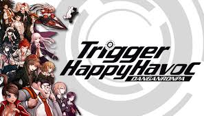

- Danganronpa: Trigger Happy Havoc
- Danganronpa 2: Goodbye Despair
- Danganronpa Another Episode: Ultra Despair Girls
- Danganronpa V3 Killing Harmony

Danganronpa: Trigger Happy Havoc is a visual novel adventure game developed
and published by Spike as the first game in the Danganronpa series.
The game was originally released in Japan for the PlayStation Portable
in November 2010 and was later ported to Android and iOS in August 2012.
Danganronpa was localized and published in English regions by NIS America in
February 2014, and for PC, Mac and Linux in February 2016.